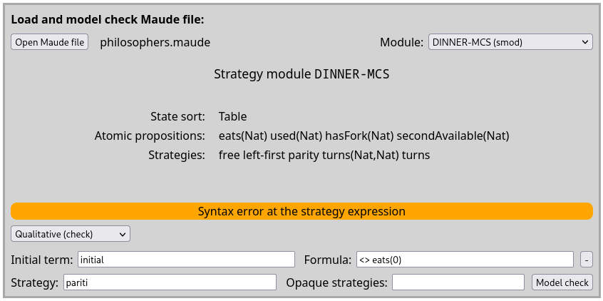
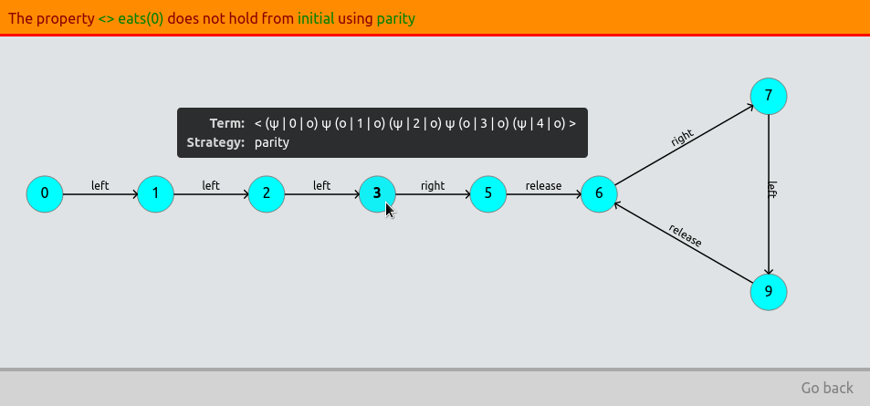

Other tools¶
In addition to the main model-checking subcommands, umaudemc provides other auxiliary commands for graph generation and a GUI interface.
Graph generation¶
The program umaudemc can also be used to output the rewrite graph and strategy-controlled rewrite graph used for model checking in GraphViz’s DOT format with the subcommand graph.
$ umaudemc graph ⟨filename⟩ ⟨initial state⟩ [ ⟨strategy⟩ ]
The common arguments for selecting modules, the formatting options elabel and slabel, and the strategy-specific options (full-matchrew, purge-fails, merge-states, and kleene-iteration) can be passed too. Moreover, the subcommand has some specific arguments:
–-depth ⟨number⟩Limits the graph to the states that are reachable from the initial state by at most the given number of steps.
–-passign ⟨method⟩Specifies a probability assignment method for generating graphs of probabilistic models. This is equivalent to the
assignoption ofpcheck(see Probabilistic model checking).–-aprops ⟨list⟩Comma-separated list of atomic propositions to be written as state annotations in the output file (for SMV, PRISM, and JANI output only).
–-format ⟨option⟩Selects the output format of the graph, among GraphViz’s DOT (
dot), LaTeX’s TikZ (tikz), NuSMV (nusmv), Promela (spin), PRISM (prism), and JANI (jani).-o ⟨filename⟩Outputs the graph to a file instead of the standard output. If the file extension is
pdf, thedotcommand will be called if available to directly produce the PDF file. If the extension issmv,pm,pml, orjani, a SMV, PRISM, Spin (Promela), or JANI model will be generated instead of DOT, respectively. If--formatis present, the output format will not be guessed.
A graphical interface¶
Alternatively to the command-line interfaces, the standard and probabilistic model checkers can be used from a graphical user interface.[1]
$ umaudemc [ gui [ --web ] [ --backends=⟨list of backends⟩ ] ]
When executing umaudemc as above, a local server will start and a web-browser window will be opened in its home page. As shown in the screenshot, users should select the source file and Maude module they want to verify. Relevant information about the state sort, the atomic propositions and the available strategies is shown. An initial state and a formula in any supported logic must be entered in their corresponding fields. The strategy field can be filled not only with a strategy name but with an arbitrary strategy expression, and it can also be left blank for model checking without strategies. Opaque strategies are introduced as a space-separated list of names. Syntax errors will be reported when the Model check button is activated.

Model selection screen.¶
A message will indicate that model checking has started (perhaps sparkly), offering the possibility of cancelling the operation. As soon as the model checker finishes, the result will appear in place of that message. In case a counterexample is available, it will be shown as in the image. By hovering over any of the states, more information is printed, like the current term and the next strategy to be executed from the state. Various configuration options like the precedence of model-checking backends can be set in the command-line invocation, as described with umaudemc gui --help.

Counterexample view screen.¶
Moreover, if the GTK library and its Python bindings are installed in the host system, an almost identical interface will be opened in a normal desktop window instead of a web browser. The web interface can still be used by introducing the --web flag.
Warning
Notice that the web-based interface is intended for local use, and it will be attached to a local address by default. However, the server address and port can be changed with the --address ⟨address⟩:⟨port⟩ flag. Anyone opening the webpage will be able to access the whole filesystem and initiate model-checking tasks. An option --rootdir ⟨path⟩ is available to limit filesystem access to a specific directory, but neither the builtin Python server nor this interface actively try to prevent non-legitimate use.
Batch checking¶
The test subcommand supports the batch execution of several standard model-checking tasks specified in a JSON or YAML like this one. It has been used for testing and benchmarking the model-checking backends.
$ umaudemc test ⟨test suite specification⟩
Information about some additional options can be optioned with the --help flag.